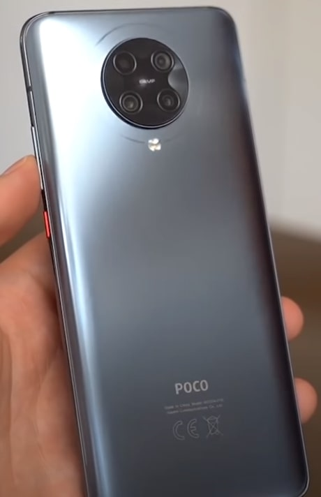
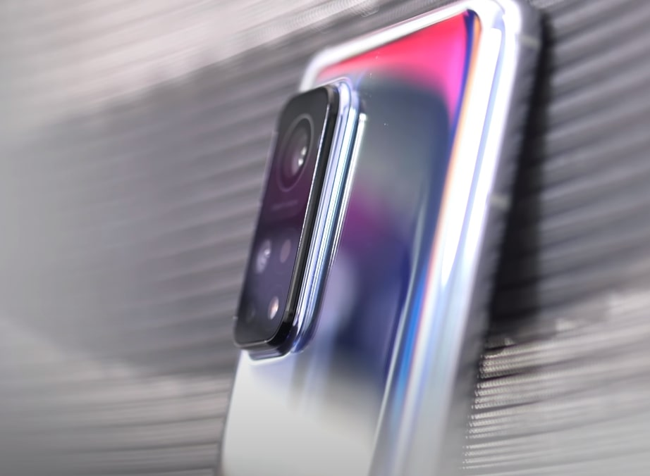

Najbardziej opłacalne telefony na 1 kwartał 2021 roku
Następne 2 telefony z Polskiej dystrybucji ,które możemy kupić. Będą to 2 modele i tu wszystko będzie zależne co od smartfona oczekujesz. Wrzucam tutaj 2 telefony ,ale raczej należy to traktować jako jedność. Xiaomi POCO F2 Pro i Xiaomi Mi 10 T Pro. POCO F2 Pro to exflagowy Snapdragon 865, możliwość nagrywania filmów w 8K, przyzwoity aparat, dobra bateria, fajna jakość wykonania. Zaznaczam jest tu duży ekran 6,67 cala. Jeżeli oczekujesz takiego złotego środka ,czyli bardzo dobrych komponentów , dobrej specyfikacji za w miarę rozsądną cenę to jak na rok 2021 POCO F2 Pro jest jak najbardziej godny polecenia.
Jeżeli jednak nie POCO a chciałbyś coś od Xiaomi to polecam na spojrzenie na Mi 10T Pro. Ekran taki sam 6,67 cala, możliwość nagrywania filmów w 8K, aparat główny 108 Mpix, ogniwo 5000 mAh , również Snapdragon 865 oraz 8 Gb RAM. Jeden jak i drugi telefon coś około 2400 złotych.

